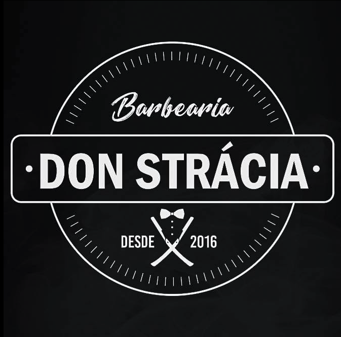
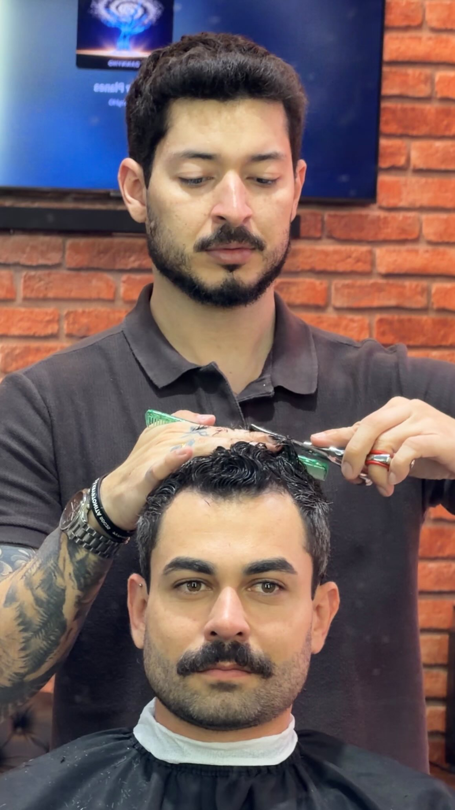
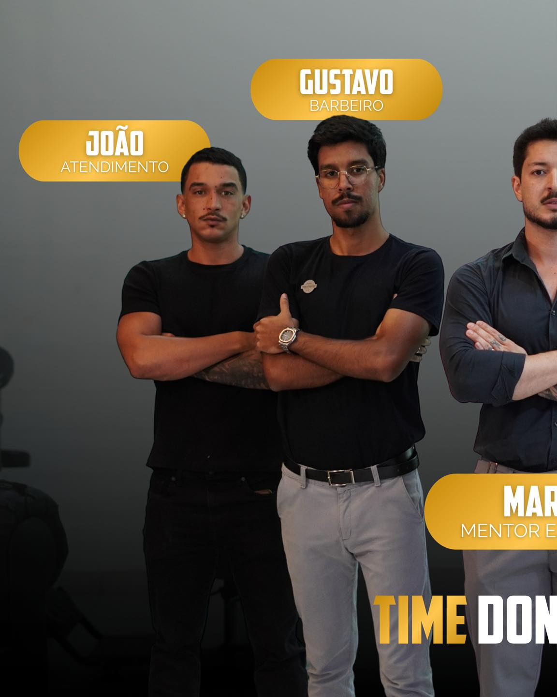

Entender você
Rotina, personalidade, objetivos e a mensagem que sua imagem precisa comunicar.

Don StráciaBarbearia & visagismo · Barretos
A primeira barbearia de Barretos especializada em visagismo. Técnica, intenção e identidade para construir uma imagem que realmente representa você.

Desde 2016Cada rosto comunica algo único. Na Don Strácia, o atendimento começa pela escuta e pela leitura da sua identidade — para que cabelo, barba e estilo trabalhem a favor da imagem que você quer transmitir.
Especialista em visagismo
Visagista e profissional à frente da Don Strácia, Marcos transforma técnica em estratégia de imagem. O objetivo não é seguir uma tendência: é encontrar proporções, formas e detalhes que valorizem sua personalidade, profissão e momento de vida.
Falar com a Don StráciaExperiência Don Strácia
Um atendimento pensado para ir além da cadeira e entregar clareza, confiança e presença.
Rotina, personalidade, objetivos e a mensagem que sua imagem precisa comunicar.
Uma proposta construída a partir das proporções do rosto e da sua identidade.
Técnica, acabamento e orientação para você manter o resultado no dia a dia.

Time Don Strácia
Profissionais alinhados à essência da casa, comprometidos com evolução constante e com a experiência de cada cliente.
Agende sua experiência
Converse com o time, consulte os horários disponíveis e dê o primeiro passo para uma imagem mais intencional.
Alameda RJC 2, Alameda Joel Dias da Cunha, 17
Jockey Club · Barretos/SP · 14787-320